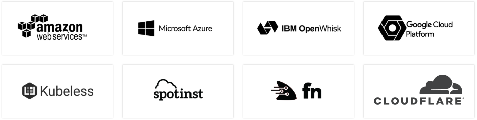

Serverless
Jak żyć bez backendu?
Tomasz Kociołek
Opowiem:
- Co to jest?
- Jak to działa?
- Co może?
- Po co mi to?
Pokażę:
- Jak skonfigurować
- Jak pisać serverless.yml
- Jak developować
Co to jest?
Framework
![Serverless]()
Co to jest?
Wiele różnych dostawców
Jak to działa?
Orchestrators
- AWS CloudFormation
- IBM Cloud Orchestrator
- Microsoft Azure Automation
- Jest ich dużo wiecej ;)
Jak to działa?
Przykład serverless.yml
service:
name: alexa-example # service name - this is going to be part of functions/resource names
provider:
name: aws # which cloud provider
runtime: nodejs8.10 # what type of runtime https://docs.aws.amazon.com/lambda/latest/dg/lambda-runtimes.html
stage: ${opt:stage, 'dev'} # if it's development version then stage can be dev; prod for production qa/test for testing etc
stackName: ${self:service}-${self:provider.stage} # stack definition is remembered under that name
region: ${opt:region, 'us-east-1'} # region in which our resources are defined
profile: serverless-terminator # The default profile to use with this service
iamRoleStatements: # access statemets for this group
- Effect: Allow
Action:
- "dynamodb:PutItem"
- "dynamodb:GetItem"
- "dynamodb:UpdateItem"
- "dynamodb:DeleteItem"
- "dynamodb:BatchGetItem"
- "dynamodb:BatchWriteItem"
- "dynamodb:Query"
- "dynamodb:Scan"
Resource:
- Fn::GetAtt: [ColorsDynamoDBTable, Arn]
- Fn::Join:
- '/'
- - Fn::GetAtt: [ColorsDynamoDBTable, Arn]
- '*'
environment: # predefined environment variables
TABLE_NAME:
Ref: ColorsDynamoDBTable
functions: # functions definition
skill:
handler: index.handler
events:
- alexaSkill:
appId: amzn1.ask.skill.5a265f55-538b-40c8-8663-864cdd578306
enabled: true
resources: # CloudFormation resources definition
Resources:
ColorsDynamoDBTable:
Type: "AWS::DynamoDB::Table"
Properties:
AttributeDefinitions:
- AttributeName: Color
AttributeType: S
KeySchema:
- AttributeName: Color
KeyType: HASH
ProvisionedThroughput:
ReadCapacityUnits: 5
WriteCapacityUnits: 5
SSESpecification:
SSEEnabled: true
Co może?
Commands
* You can run commands with "serverless" or the shortcut "sls"
* Pass "--verbose" to this command to get in-depth plugin info
* Pass "--no-color" to disable CLI colors
* Pass "--help" after any for contextual help
Framework
* Documentation: https://serverless.com/framework/docs/
config ........................ Configure Serverless
config credentials ............ Configures a new provider profile for
the Serverless Framework
create ........................ Create new Serverless service
install ....................... Install a Serverless service from GitHub or a plugin from the Serverless registry
package ....................... Packages a Serverless service
deploy ........................ Deploy a Serverless service
deploy function ............... Deploy a single function from the service
deploy list ................... List deployed version of your Serverless Service
deploy list functions ......... List all the deployed functions and their versions
invoke ........................ Invoke a deployed function
invoke local .................. Invoke function locally
info .......................... Display information about the service
logs .......................... Output the logs of a deployed functionmetrics ....................... Show metrics for a specific function
print ......................... Print your compiled and resolved config file
remove ........................ Remove Serverless service and all resources
rollback ...................... Rollback the Serverless service to a specific deployment
rollback function ............. Rollback the function to a specific version
slstats ....................... Enable or disable stats
plugin ........................ Plugin management for Serverless
plugin install ................ Install and add a plugin to your service
plugin uninstall .............. Uninstall and remove a plugin from your service
Po co mi to?
Żeby wiedzieć jak żyć bez backendu. Do pisania skilla alexy też się przyda :)
Pokażę:
- Jak skonfigurować: Notatka
- Jak pisać serverless.yml Przykład Kamilowy
- Jak developować Szybki przykład